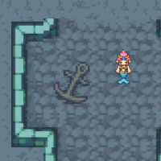
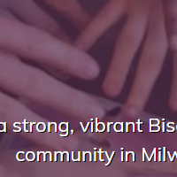
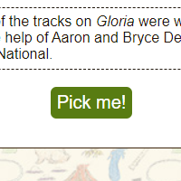

I'm a web developer.
I currently work as a Senior Software Engineer at Laughlin Constable, an ad agency in Milwaukee, WI. But I've been creating things for the web since I was a preteen asking her parents to buy her web hosting so she could set up a forum about Harry Potter. Even back then I was curious about SEO, concerned with accessibility, eager to learn best practices. Now I spend my working hours sharing that expertise professionally (and I still spend some of my free time making things for my own entertainment.)

Things I'm Doing For Fun
-

BirthdayBot
A web app built with Node, Express, and Handlebars that pulls information from the WikiData and Spotify APIs.
-

React Atlantis
A video game-esque experiment with create-react-app and an excuse to play around with some cute pixel art.
-

Bi+ Pride Milwaukee Website
A static, low-maintenance landing page for Bi+ Pride Milwaukee to complement their Facebook page.
-

Sufjan Showdown
While perhaps yearning to be rewritten as a smooth single-page app, for now this tribute to singer-songwriter Sufjan Stevens runs on PHP with a MySQL database.
Things I've Done For Work
I previously worked as an Interface Developer at Ascedia, an award-winning digital consultancy. These are some of my favorite projects I worked on in my time there.
(Note: Live sites may contain work that was done after my time maintaining them.)
Travel Wisconsin Fall Color Report
(and Snow Conditions Report)I built the side navigation and informational panel from wireframes and visual representations. I also worked with a back-end developer to create templates using the lightweight Template7 templating engine.
Sub-Zero and Wolf "Reveal" product configurator
I participated in the design process for this, providing feedback and creating prototypes as the workflows were created. I built the interface based on the resulting designs in collaboration with a team of back-end developers.
-
Redesign of the Dane County portal
I worked with developers from Dane County inside their development environment to build this new front-end on top of their existing, custom-made content management system. I also helped conceptualize a system of color schemes for use on the county's individual department sites and created an internal static site to serve as their pattern library.
MGIC Readynest
I built the interface for this site, which is built on Sitecore and uses Sitecore's Experience Editor, based on design documentation provided by MGIC and went onsite to collaborate with and train MGIC developers. I used an internally-developed CSS framework.
Sometimes I'm Offline, Too.
I like baking cookies. I have a community garden plot and I'm trying to learn to grow things. I knit from time to time. Every November I write a novel for National Novel Writing Month. I have pet hermit crabs. My preferred form of exercise is hula hooping, and I know some pretty cool hoop tricks.